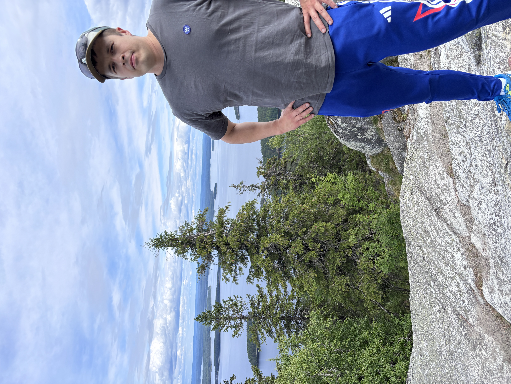

Otto Hihnala
Etusivu |
Tietoja minusta |
Minun työhistoriani |
Tulevaisuudessa |
Taulukko

Tulevaisuudessa....
Näen itseni menestyneenä yrittäjänä, joka voi operoida projekteja jopa kansainvälisesti. Minun tavoitteeni ovat selkeät, olen kirjoittanut ne mustalle pienelle vihkolle.
- Tärkeimpänä tavoittelen täydellistä mahdollisuutta etätyöhön, eli voin tehdä työni myös esim Portugalin tai Espanjan rannikkokaupungeista.
- Tärkeää on myös riittävä tulotaso, jotta elämänlaadun on mahdollista pysyö hyvänä.
- Minun luonteelleni erittäin tärkeää on myös matala hierarkia, eli samat mahdollisuudet kaikille ilman titteleitä. Mielestäni jokaisen menestys tulee perustua omiin kykyihin eikä siihen, mitkä kortit on elämän peliin saanut.
Nämä kaikki edellä kuvatut tavoitteet aion toteuttaa, pieni pala kerrallaan.
Yhteystiedot
Jos haluat ottaa minuun yhteyttä vakuutusasioissa, voit tehdä sen sähköpostitse tai puhelimitse:
otto.hihnala@pohjola.fi
puh: 050 443 1320
Kalajoen OP KONTTORI
Ohessa linkki sivustolleni: Oton sivut